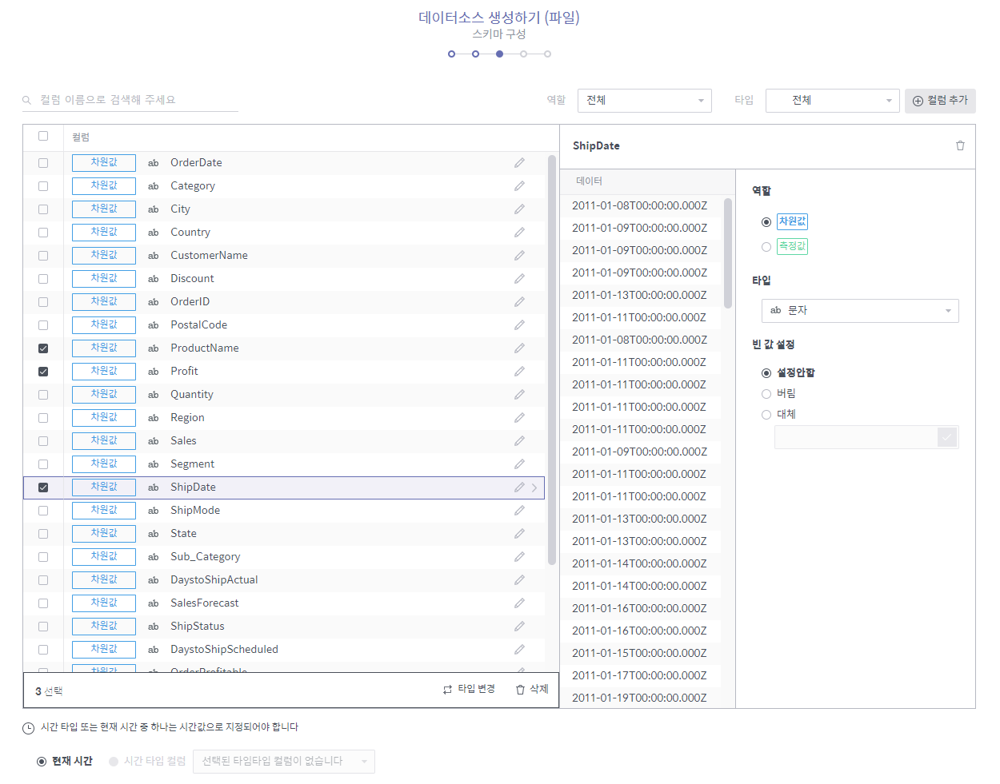
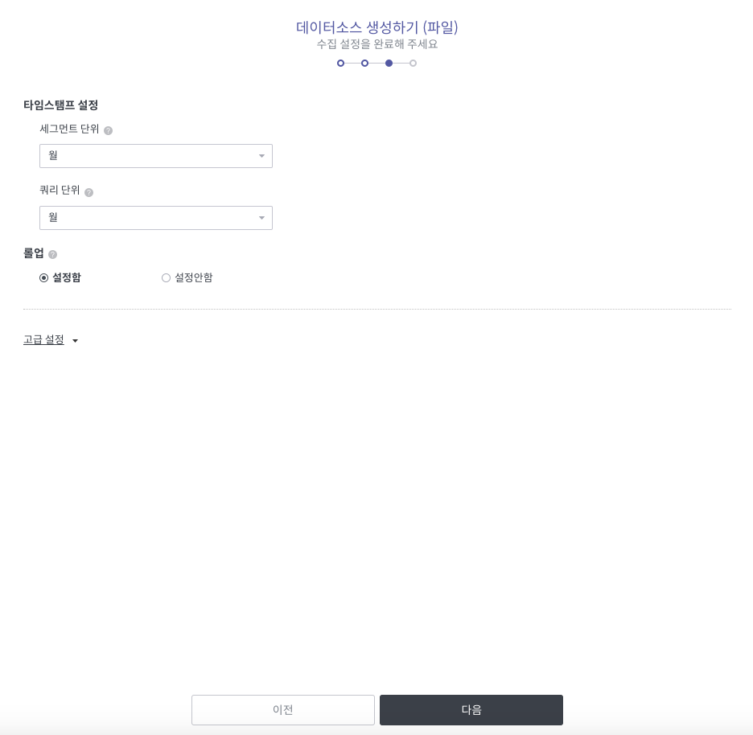
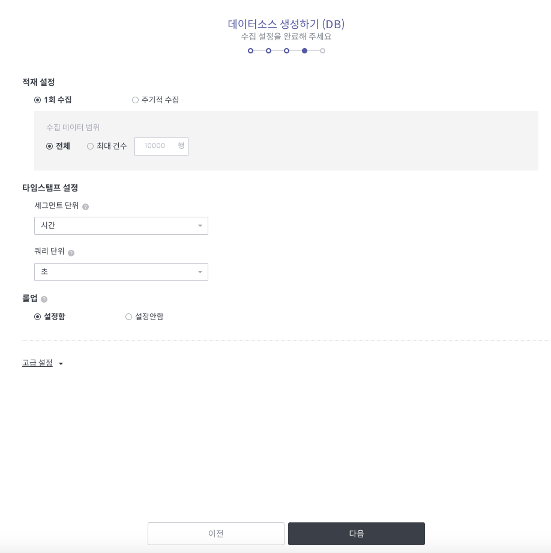

데이터 소스 만들기¶
본 절에서는 다양한 형태의 원천 데이터를 Metatron 엔진으로 가져와 데이터 소스로 만드는 과정을 설명합니다.
데이터 소스를 생성하려면 데이터 소스 홈 화면 우측 상단에서 + 새로만들기 버튼을 클릭합니다.

그런 다음 원천 데이터의 타입을 선택합니다.

파일: 사용자의 로컬 PC에 저장되어 있는 파일을 가져와서 데이터 소스를 생성합니다(자세한 절차는 파일로 데이터 소스 만들기 참조).
데이터베이스: 외부 데이터베이스에서 데이터를 가져와서 데이터 소스를 생성합니다(자세한 절차는 DB로 데이터 소스 만들기 참조).
Staging DB: Metatron의 내부 Hive 데이터베이스에서 가져온 데이터를 기반으로 데이터 소스를 생성합니다(자세한 절차는 StagingDB로 데이터 소스 만들기 참조).
실시간: 현재 해당 기능은 지원하지 않습니다.
데이터스냅샷: 현재 해당 기능은 지원하지 않습니다.
Metatron 엔진: Metatron 이전 버전에 저장된 데이터 소스를 마이그레이션 합니다(자세한 절차는 Metatron 엔진을 통해 데이터 소스 추가하기 참조).
파일로 데이터 소스 만들기¶
사용자의 로컬 PC에 저장되어 있는 파일을 가져와서 데이터 소스를 생성합니다.
원천 데이터 타입 선택 화면에서 파일을 선택합니다.
사용자 로컬 PC에서 데이터 소스로 사용할 파일을 가져옵니다. Import 버튼을 클릭하여 파일을 선택할 수도 있고 화면 상으로 파일을 끌어다 놓을 수도 있습니다. 파일을 가져왔으면 다음 버튼을 누릅니다.

가져온 파일에서 데이터 소스에 포함시킬 시트를 선택합니다.
참고
데이터가 있음에도 불구하고 '미리보기 데이터가 없습니다'로 나오는 경우에는, 컬럼 구분자 및 라인 구분자를 맞게 설정했는지 확인해야 합니다. 이 예제에서는 라인 구분자가 MS Windows의 carriage return인 'r'로 입력이 되어야 합니다.

파일 이름: 가져온 파일의 이름입니다. 다른 파일을 다시 가져올 수도 있습니다.
파일 시트 목록: 가져온 파일에 포함된 시트들을 보여줍니다. 여기서 데이터 소스로 만들 시트를 선택합니다.
파일 시트 이름: 현재 선택된 시트 이름입니다.
용량: 가져온 파일의 용량입니다.
컬럼: 가져온 파일의 컬럼 개수입니다.
행: 가져온 파일의 행 개수입니다. 숫자를 입력하면 해당 숫자만큼의 행이 화면에 나타납니다.
타입: 각 컬럼으로부터 인식한 데이터 타입이 몇 종류인지 보여줍니다. 컬럼별 데이터 타입은 이후 화면에서 수정할 수 있습니다.
첫째 행을 컬럼명으로 사용 여부 확인란: 선택하면 파일 내의 첫번째 행의 내용이 컬럼명으로 사용됩니다. 선택하지 않을 경우 컬럼명을 기재할 행이 새로 생성됩니다.
데이터 소스에서 구현하고자 하는 스키마를 설정합니다.

컬럼명으로 검색: 가져온 파일에 들어있는 컬럼을 이름으로 검색합니다.
역할: 가져온 파일에 들어있는 컬럼을 전체/차원값/측정값으로 선별하여 조회합니다.
추천 필터: 최우선 추천 필터가 적용된 컬럼들만 선별하여 조회합니다.
타입: 가져온 파일에 들어있는 컬럼을 필드 타입별로 선별하여 조회합니다.
컬럼 목록 영역: 설정한 선별 조건에 맞는 컬럼들을 보여줍니다. 컬럼들을 선택하면 하단에 패널이 나타나는데, 여기서 원하는 일괄 동작을 선택한 후 적용을 클릭하면 선택한 컬럼들에 대한 일괄 동작이 수행됩니다.
개별 컬럼 설정 영역: 컬럼 목록에서 선택한 컬럼의 속성들을 설정할 수 있는 영역입니다. 여기서 빈 값 설정은 컬럼 내 Null 값을 처리하는 방식을 설정하는 항목입니다.
대체: 여기에 입력된 값으로 Null 값이 대체됩니다.
버림: Null 값을 버립니다.
설정안함: Null 값이 그대로 보여집니다. 단 데이터 소스의 타임스탬프의 Null 값은 무조건 버려지게 됩니다.
타임스탬프 설정: 각 행에 타임스탬프를 지정하는 방식을 결정합니다. 기존 데이터가 보유하고 있는 시간 타입 컬럼을 타임스탬프로 지정하거나, 아니면 현재 시간 값으로 이루어진 시간 타입 컬럼을 생성하여 타임스탬프로 지정할 수 있습니다.
참고
Metatron 엔진은 데이터 소스 저장 시 무조건 시간 값을 보유해야 하는 시계열 엔진입니다.
데이터 소스 수집 설정을 하고 다음 버튼을 누릅니다.

세그먼트 단위: 분산 노드 환경에서 동작하는 Druid의 특성을 활용하기 위해 데이터를 분할하여 저장하게 되는데 이때 저장하는 시간 단위를 결정합니다.
쿼리 단위: 분석에서 수행하고자 하는 최소 시간 단위를 결정합니다. 이는 최소 단위까지의 결과를 미리 생성하여 이후에 보다 빠른 응답을 얻을 수 있도록 하기 위함입니다.
롤업: '데이터 롤업'은 차원값을 기준으로 데이터를 요약하는 작업입니다('데이터 롤업'의 개념에 대한 보다 상세한 설명은 데이터 roll-up 참조). 요약 규칙은 계층 구조를 따라 합계를 계산하거나
profit=sales=expenses와 같은 수식 집합을 적용하는 것일 수 있습니다.고급설정: 데이터 적재 성능을 설정합니다. 텍스트상자에 JSON 형식의 구문을 입력하십시오. 예,
{maxRowsInMemory : 75000, maxOccupationInMemory : -1, maxShardLength : -2147483648, leaveIntermediate : false, cleanupOnFailure : true, overwriteFiles : false, ignoreInvalidRows : false, assumeTimeSorted : false}가져온 파일에서 설정한 데이터에 관한 정보를 확인한 뒤, 이름과 설명을 입력하고 완료 버튼을 누르면 데이터 소스가 생성됩니다. 이때, 원천 데이터에서부터 Metatron 내장 엔진(Druid)으로 적재(ingestion)하기 때문에 데이터량에 따라 수 초~분의 시간이 소요될 수 있습니다.

데이터 적재가 완료된 후 상태를 확인해볼 수 있습니다. 아래 예시에서는 상태가 ENABLED로 되어 있으며 히스토그램이 보입니다.

데이터 탭으로 이동을 하면 적재된 데이터를 테이블 형태로 확인할 수 있습니다.

데이터 소스 관리 홈 화면으로 이동하면 생성된 데이터 소스를 화면에서 확인할 수 있습니다. 데이터 적재가 수행되는 중에는 아래와 같이 상태가 Disabled로 표시되게 되고 적재가 완료되면 Enabled로 변경됩니다. 이때부터 데이터 소스를 사용할 수 있습니다.

DB로 데이터 소스 만들기¶
외부 데이터베이스에서 데이터를 가져와서 데이터 소스를 생성합니다.
원천 데이터 타입 선택 화면에서 데이터베이스를 선택합니다.
연결할 데이터베이스의 정보를 입력합니다.

수집 타입: 데이터 소스가 데이터를 수집하는 방식을 선택합니다.
수집형 데이터(Ingested): 데이터를 Metatron 서버에 직접 저장하는 방식으로 수집된 데이터 소스들이 출력됩니다.
연결형 데이터(Linked): 연결된 데이터베이스에서 필요한 시점마다 데이터를 가져오는 방식의 데이터 소스들이 출력됩니다.
데이터 커넥션 로드: 기존에 등록된 데이터 커넥션에 연결되어 있는 데이터베이스의 접근 정보를 자동으로 불러올 수 있습니다. 단, 이때도 유효성 체크 버튼을 눌러서 연결 검증은 반드시 실시해야 합니다.
DB 타입: 연결할 데이터베이스의 타입을 선택합니다.
Host: 연결할 호스트 값을 입력합니다.
Port: 연결할 포트 번호를 입력합니다.
사용자이름: 해당 데이터베이스의 username을 입력합니다.
비밀번호: 해당 데이터베이스의 비밀번호를 입력합니다.
유효성 체크: 모든 입력 항목을 다 작성하면 테스트 버튼이 활성화 됩니다. 클릭하면 커넥션이 정상적인지 여부가 버튼 하단에 나타납니다. 정상적이라면 유효한 커넥션, 비정상적이라면 잘못된 커넥션이라는 문구가 나타납니다.
데이터를 선택합니다. 연결된 데이터베이스 계정에서 테이블을 선택할 수도 있고 쿼리문을 직접 작성할 수도 있습니다.

테이블: 데이터베이스와 테이블명을 선택한 후 실제 저장될 데이터가 조회되면, 확인 후 다음 버튼을 누릅니다.
쿼리: 원하는 데이터를 가져올 수 있는 쿼리문을 직접 작성하고 실행 버튼을 클릭하면 하단에 데이터가 보여집니다. 데이터를 확인한 후 다음 버튼을 누르십시오.
이후 절차는 파일로 데이터 소스 만들기 항목과 동일합니다. 단, 데이터베이스로부터 데이터 소스를 생성할 경우 수집 설정 시 아래와 같이 적재 설정 항목을 추가로 설정해야 합니다.

1회 수집: 현재 데이터베이스에 있는 데이터를 이번 한번만 적재합니다. 최대 건 수를 선택할 경우 제1행부터 몇 번째 행까지 적재할지 지정할 수 있습니다.

주기적 수집: 기간을 두어 데이터 저장을 주기적으로 실행합니다.

StagingDB로 데이터 소스 만들기¶
Metatron의 내부 Hive 데이터베이스에서 가져온 데이터를 기반으로 데이터 소스를 생성합니다.
원천 데이터 타입 선택 화면에서 Staging DB를 선택합니다.
연결할 데이터베이스와 테이블을 선택하면 데이터가 출력됩니다.

이후 절차는 DB로 데이터 소스 만들기 항목과 동일합니다.

Metatron 엔진을 통해 데이터 소스 추가하기¶
Metatron 이전 버전에 저장된 데이터 소스를 마이그레이션합니다.
원천 데이터 타입 선택 화면에서 Metatron 엔진을 선택합니다.
아래와 같이 이전 버전의 Metatron에서 만든 데이터 소스가 좌측 화면에 나열되면, 그 중에서 현 버전으로 마이그레이션하고자 하는 데이터 소스들의 확인란에 체크합니다.

마침 버튼을 누르면 선택한 데이터 소스들이 마이그레이션됩니다.